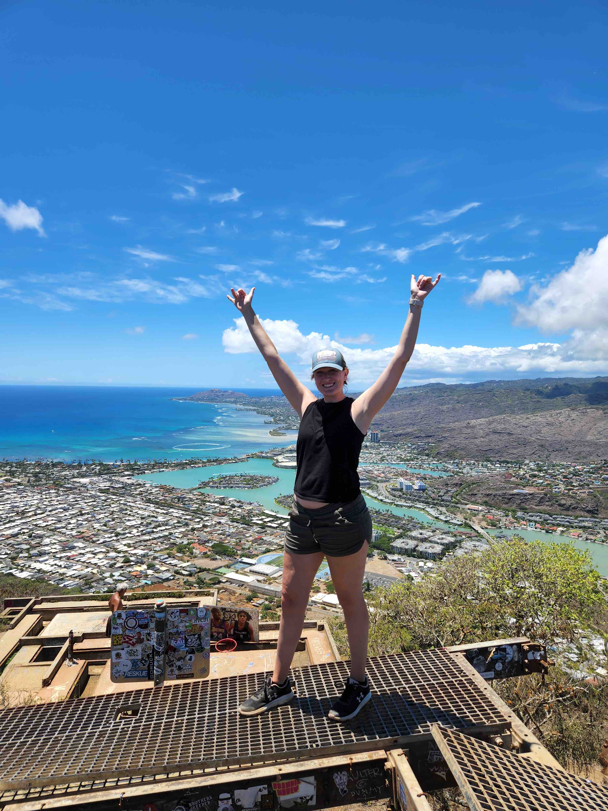
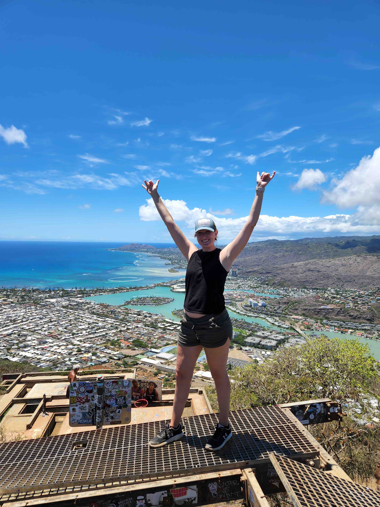

I'm Brittni!
I grew up in Northern Michigan. My love for travel, experiencing different cultures, and design guided me to my degrees in Archaeology and Geographic Information Systems (GIS).
During my college years I studied abroad in Belize, where I specialized in Maya Archaeology. After my return to the US, I participated on a few more archeological projects within Michigan.
Though I'm not currently working on any digs, I am still traveling whenever possible. Including, traveling solo to Costa Rica to learn to surf.
My eye for design came into play in GIS. Although, GIS is more than just designing and creating maps. It is effectively displaying geographical/spatial data for the audience to use and
understand. This is also a useful skill to contribute to my future in web development.


 
